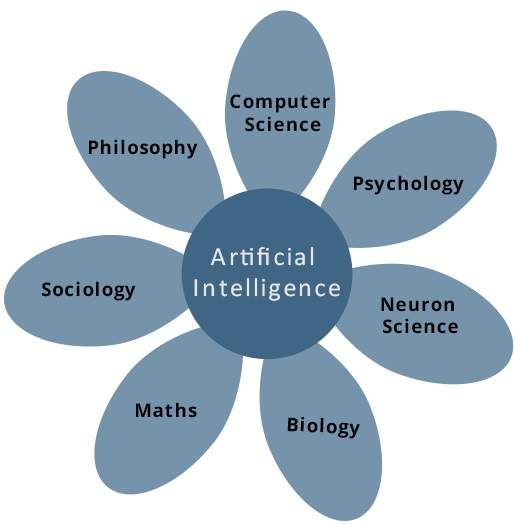

"What is A.I?" asks the robot.
According to the father of Artificial Intelligence, John McCarthy, it is “The science and engineering of making intelligent machines, especially intelligent computer programs”.
Artificial Intelligence is a way of making a computer, a computer-controlled robot, or a software think intelligently, in the similar manner the intelligent humans think.
AI is accomplished by studying how human brain thinks, and how humans learn, decide, and work while trying to solve a problem, and then using the outcomes of
this study as a basis of developing intelligent software and systems.
While exploiting the power of the computer systems, the curiosity of human, lead him to wonder, “Can a machine think and behave like humans do?”
Thus, the development of AI started with the intention of creating similar intelligence in machines that we find and regard high in humans.
Artificial intelligence is a science and technology based on disciplines such as Computer Science, Biology, Psychology, Linguistics, Mathematics, and Engineering.
A major thrust of AI is in the development of computer functions associated with human intelligence, such as reasoning, learning, and problem solving.
Out of the following areas, one or multiple areas can contribute to build an intelligent system.

"Many science can contribute to build an A.I. system."
The programming without and with AI is different in following ways:
| Programming Without AI | Programming With AI |
|---|---|
A computer program without AI can answer |
A computer program with AI can answer |
Modification in the program leads |
AI programs can absorb new modifications |
Modification is not quick and easy. |
Quick and Easy program modification. |
In the real world, the knowledge has some unwelcomed properties:
AI Technique is a manner to organize and use the knowledge efficiently in such a way that:
AI techniques elevate the speed of execution of the complex program it is equipped with.